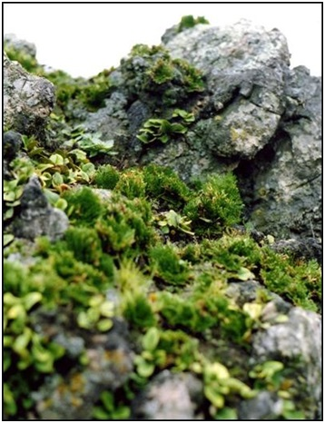

16. Гора Гомель
Сопка Памятник природы представляет собой горный массив, образованный несколькими хребтами, соединяющимися в срединной части, с преобладающей вершиной г. Гомель (289 м) и примыкающими к нему с западной и северо-восточной сторон участками равнинных территорий. Горное образование - изолированный горный массив, сформировавшийся на территории Среднеамурской низменности в мезозое и сложенный породами вулканического происхождения, перекрытыми четвертичными отложениями. Средняя высота горного массива составляет 210 м.
На склонах и вершинах горного массива сформировался неоднородный растительный покров. На южных склонах восточных и юго-восточных участков горного массива сформировались дубово-липовые леса с березой даурской. Северные, северо-восточные склоны и подножие массива покрыты редкостойной растительностью. На склонах северной экспозиции имеются каменные россыпи, скальные обнажения, покрытые растительностью.
Равнинные участки территорий, входящие в границы памятника природы, покрыты рёлками с порослью дуба, березы даурской, с разнотравно-вейниковыми лугами.
В составе растительного покрова отмечены виды, занесенные в Красную книгу РФ и Красную книгу ЕАО (пион молочноцветковый, лилия низкая, плауноктамарисковый, рододендрон даурский, секуринега полукустарниковая, тромсдорфия реснитчатая, ширококолокольчик крупноцветковый).
Территория памятника природы входит в состав приамурского фаунистического комплекса, в котором помимо типичных представителей фауны отмечены некоторые редкие и нуждающиеся в особых мерах охраны виды птиц и пресмыкающихся: болотный лунь, кобчик амурский, кулик-сорока, орлан-белохвост, пегий лунь, широкорот, амурский полоз и красноспинный полоз.
